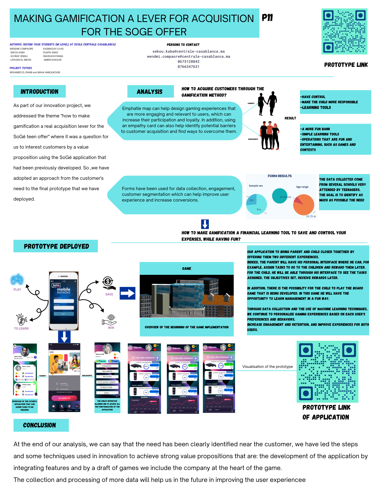

Identification and tracking assets State of the art on Industry 4.0 technologies Connecting Python with MySQL database, with the Arduino microcontroller, and creating a graphical interface. Prototyping and testing of RFID reader, infrared sensor, and servo motor on the Arduino microcontroller.

Project with SOCIETE GENERALE
Acquisition and customer loyalty in a bank. Benchmark on gamification, empathy map on adolescents and parents and innovation tracks. Simulation of a mobile application on Figma and beginning development of a board game.
ECC Projects

Database Project
Built an online library managment Contextualization, setting up a specifications document Creating a data dictionary, resulting entity-association model, translation into a relational model.
Numerical Methods for Engineering
The finite element method is used to solve Fisher's equation, a fundamental model in population dynamics.
Project Learning By Doing